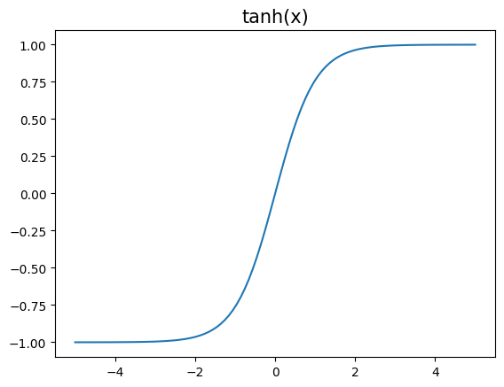
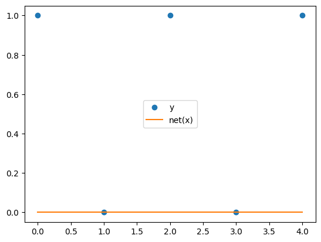
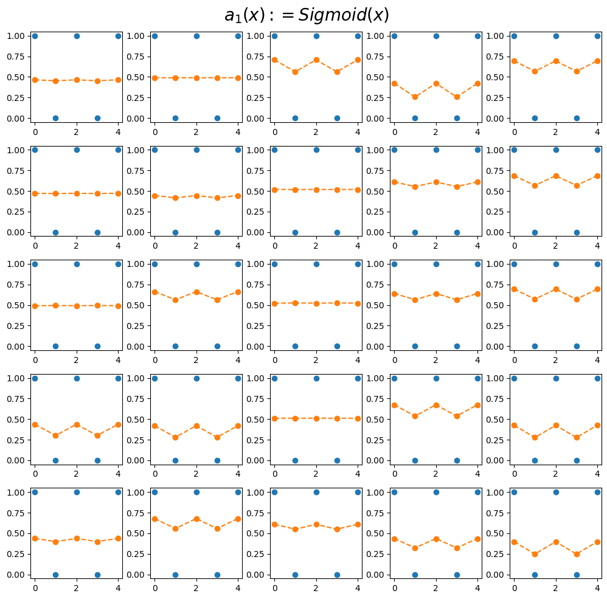
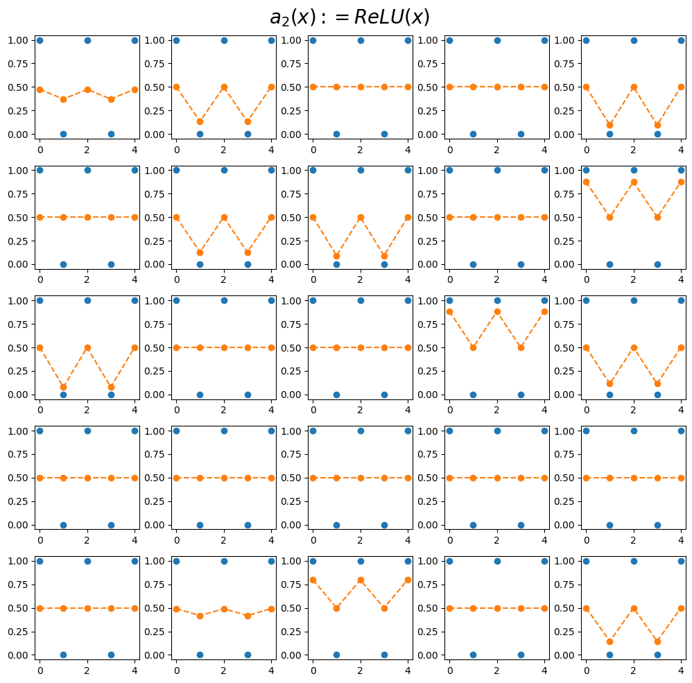
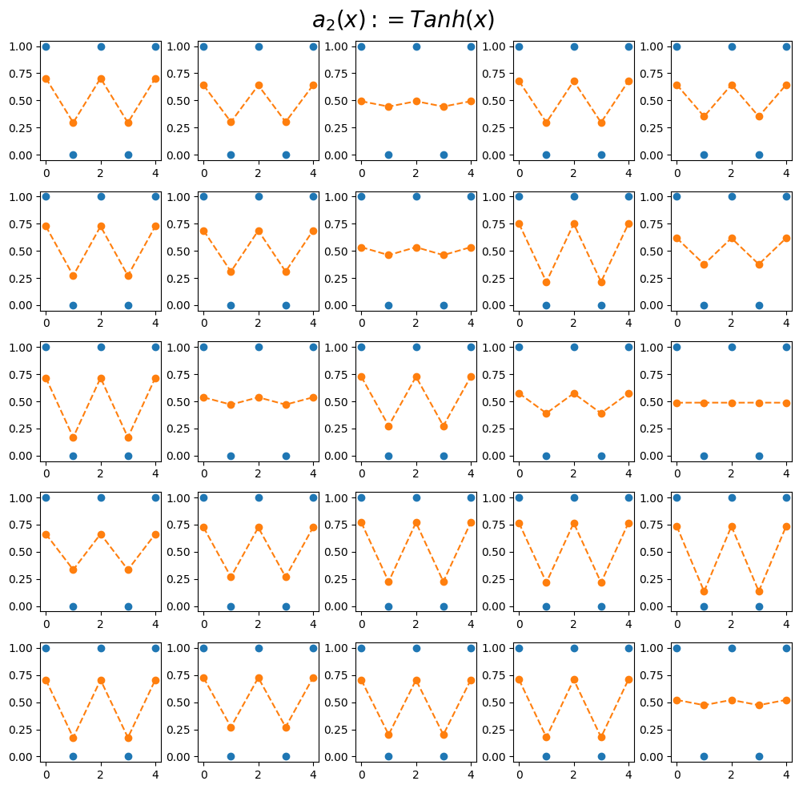

import
Define some Functions
- 활성화 함수들
Text(0.5, 1.0, 'tanh(x)')
- 문자열을 숫자로 바꾸는 함수
(사용예시 1)
txt = ['a','b','a']
mapping = {'a':33,'b':-22}
print('변환전: %s'% txt)
print('변환후: %s'% f(txt,mapping))변환전: ['a', 'b', 'a']
변환후: [33, -22, 33](사용예시 2)
Exam1 : ab
data
- 다음과 같이 문자열이 주어지면 다음 단어를 예측할 수 있도록 학습 시키고 싶음
- 즉, a가들어오면 b를 뱉어내고, b가 들어가면 a를 뱉어내도록 학습시키고 싶음
선형모형을 이용한 풀이
(풀이 1) 1개의 파라미터 - 실패
- 데이터 정리
- 학습 및 결과 시각화
<matplotlib.legend.Legend at 0x7f874e067160>
- 학습이 잘 되지 않음.
- 잘 안된 이유
| x | y | |
|---|---|---|
| 0 | 0.0 | 1.0 |
| 1 | 1.0 | 0.0 |
| 2 | 0.0 | 1.0 |
| 3 | 1.0 | 0.0 |
| 4 | 0.0 | 1.0 |
현재 \(\hat {y_i} = \hat{w}x_i\)꼴의 아키텍처이고 \(y_i \approx \hat {w}x_i\)가 되는 적당한 \(\hat {w_i}\)를 찾아야 하는 상황
\((x_i,y_i)=(0,1)\)이면 어떠한 \(\hat {w_i}\)를 선택해도 \(y_i \approx \hat {w}x_i\)를 만드는 것이 불가능
\((x_i,y_i)=(1,0)\)이면 \(\hat {w_i}=0\)일 경우 \(y_i \approx \hat {w}x_i\)로 만드는 것이 가능
상황을 종합해보니 \(\hat {w} = 0\)으로 학습되는 것이 그나마 최선 \(\to\) 와이? 그나마 절반은 맞출 수 있음.
- 그리고 \(x \neq 0\)으로 하면 되지않을까…??
(풀이2) 1개의 파라메터 - 성공, but 확장성이 없는 풀이
- 0이라는 값이 문제가 되므로 인코딩 방식의 변경
(tensor([[-1.],
[ 1.],
[-1.],
[ 1.],
[-1.]]),
tensor([[ 1.],
[-1.],
[ 1.],
[-1.],
[ 1.]]))- 결과는 성공
- 일단 성공은 했다.
근데…. 이거는 다른 문제에 적용이 불가능할 것 같음. \(\to\) 그리고 인코딩도 납득이 안됨.
\(a =[1,0,0], b=[0,1,0], c=[0,0,1]\) 이런식으로 바꾸고 횔성화함수를 소프트맥스를 이용해야 납득이 감
또한, 당연히 loss도 크로스 엔트로피를 써야함.
아니면 이진 분류에서 로지스틱을 쓰고, 손실함수를 binary cross entropy를 쓰면 되지 않을까…??
로지스틱 모형을 이용한 풀이
(풀이 1) 1개의 파라미터 - 실패
- 데이터를 다시 \(a=0, b=1\)로 정리
- 학습
- 결과
- 결과해석 : 예상되었던 실패임
아키텍처는 \(\hat {y_i} = \text{sig}(\hat {w}x_i)\) 꼴이다.
\((x_i,y_i) = (0,1)\) 이라면 어떠한 \(\hat {w}\)를 선택해도 \(\hat {w}x_i=0\)이다.
이 경우 \(\hat {y_i}= \text{sig}(0)=0.5\)가 된다.
\((x_i,y_i) = (1,0)\) 이라면 \(\hat {w}=-5\)와 같은 큰 값으로 선택하면 \(\text {sig}(-5) \approx 0 = y_i\)와 같이 만들 수 있다.
(풀이 2) 2개의 파라미터 + 좋은 초기값 - 성공
- 학습전 결과
- 학습후 결과
(풀이3) 2개의 파라메터 + 나쁜초기값 – 성공
- 학습전 상태
- 학습
- 결국 수렴하기 할듯? \(\to\) 부호를 학습하는 무언가가 있었음 좋겠어.
(풀이4) 3개의 파라메터를 쓴다면?
torch.nn.Sequential(
torch.nn.Linear(in_features=1,out_features=1,bias=True), ## 2개 파라미터
torch.nn.ACTIVATION_FUNCTION(),
torch.nn.Linear(in_features=1,out_features=1,bias=False) ## 1개 파라미터
)- 위와 같은 네트워크를 설정하면 3개의 파라메터를 사용할 수 있다.
- 적절한 ACTIVATION_FUNCTION을 골라야 하는데 실험적으로 tanh가 적절하다고 알려져있다. (그래서 우리도 실험적으로 이해해보자)
(예비학습1) net(x)와 사실 net.forward(x)는 같다.
tensor([[-0.1584],
[ 0.1797],
[-0.1584],
[ 0.1797],
[-0.1584]], grad_fn=<SliceBackward0>)tensor([[-0.1584],
[ 0.1797],
[-0.1584],
[ 0.1797],
[-0.1584]], grad_fn=<SliceBackward0>)그래서 net.forward를 재정의 하면 net(x)의 기능을 재정의 할 수 있다. (오버라이딩)
“lambda x: 1” 은 입력이 x 출력이 1인 함수를 의미 (즉 입력값에 상관없이 항상 1을 출력하는 함수)
“net.forward = lambda x:1” 이라고 새롭게 선언하였므로 앞으론 net.forward(x), net(x) 도 입력값에 상관없이 항상 1을 출력하게 될 것임
(예비학습 2)
- torch.nn.Module을 상속받아서 네트뤄크를 만들면 (=“class XXX(torch.nn.Module)”)와 같은 방식으로 클래스를 선언하면?
\(\to\) 약속된 아키텍처를 가진 네트워크를 찍어내는 함수를 만들 수 있다.
(예시 1) Sigmoid
class Mynet1(torch.nn.Module):
def __init__(self):
super().__init__()
self.l1 = torch.nn.Linear(in_features=1,out_features=1,bias=True)
self.a1 = torch.nn.Sigmoid()
self.l2 = torch.nn.Linear(in_features=1,out_features=1,bias=False)
def forward(self,x):
yhat = self.l2(self.a1(self.l1(x)))
return yhat이것은!
아래하구 같다!!
(예시 2) Relu
(예시 3) Tanh
클래스에 대한 이해
step1: 아래와 코드를 복사하여 틀을 만든다. (이건 무조건 고정임, XXXX 자리는 원하는 이름을 넣는다)
class XXXX(torch.nn.Module):
def __init__(self):
super().__init__()
## 우리가 사용할 레이어를 정의
## 레이어 정의 끝
def forward(self,x):
## yhat을 어떻게 구할것인지 정의
## 정의 끝
return yhat- net(x)에 사용하는 x임, yhat은 net.forward(x) 함수의 리턴값임
step2 : def __init__(self):에 사용할 레이어를 정의하고 이름을 붙인다. 이름은 항상 self.xxx 와 같은 식으로 정의한다.
class XXXX(torch.nn.Module):
def __init__(self):
super().__init__()
## 우리가 사용할 레이어를 정의
self.xxx1 = torch.nn.Linear(in_features=1,out_features=1,bias=True)
self.xxx2 = torch.nn.Tanh()
self.xxx3 = torch.nn.Linear(in_features=1,out_features=1,bias=True)
## 레이어 정의 끝
def forward(self,x):
## yhat을 어떻게 구할것인지 정의
## 정의 끝
return yhatstep3 : def forward 에 x –> yhat 으로 가는 과정을 묘사한 코드를 작성하고 yhat을 리턴하도록 한다.
class XXXX(torch.nn.Module):
def __init__(self):
super().__init__()
## 우리가 사용할 레이어를 정의
self.xxx1 = torch.nn.Linear(in_features=1,out_features=1,bias=True)
self.xxx2 = torch.nn.Tanh()
self.xxx3 = torch.nn.Linear(in_features=1,out_features=1,bias=True)
## 레이어 정의 끝
def forward(self,x):
## yhat을 어떻게 구할것인지 정의
u = self.xxx1(x)
v = self.xxx2(u)
yhat = self.xxx3(v)
## 정의 끝
return yhat예비학습 끝
Activation : sigmoid
fig, ax = plt.subplots(5,5,figsize=(10,10))
for i in range(5):
for j in range(5):
net = Mynet1()
loss_fn = torch.nn.BCEWithLogitsLoss()
optimizr = torch.optim.Adam(net.parameters())
for epoc in range(1000):
## 1
yhat = net(x)
## 2
loss = loss_fn(yhat,y)
## 3
loss.backward()
## 4
optimizr.step()
optimizr.zero_grad()
ax[i][j].plot(y[:5],'o')
ax[i][j].plot(sig(net(x[:5])).data,'--o')
fig.suptitle(r"$a_1(x):=Sigmoid(x)$",size=20)
fig.tight_layout()
Activation : ReLU
fig, ax = plt.subplots(5,5,figsize=(10,10))
for i in range(5):
for j in range(5):
net = Mynet2()
loss_fn = torch.nn.BCEWithLogitsLoss()
optimizr = torch.optim.Adam(net.parameters())
for epoc in range(1000):
## 1
yhat = net(x)
## 2
loss = loss_fn(yhat,y)
## 3
loss.backward()
## 4
optimizr.step()
optimizr.zero_grad()
ax[i][j].plot(y[:5],'o')
ax[i][j].plot(sig(net(x[:5])).data,'--o')
fig.suptitle(r"$a_2(x):=ReLU(x)$",size=20)
fig.tight_layout()
Actiovation : tanh
fig, ax = plt.subplots(5,5,figsize=(10,10))
for i in range(5):
for j in range(5):
net = Mynet3()
loss_fn = torch.nn.BCEWithLogitsLoss()
optimizr = torch.optim.Adam(net.parameters())
for epoc in range(1000):
## 1
yhat = net(x)
## 2
loss = loss_fn(yhat,y)
## 3
loss.backward()
## 4
optimizr.step()
optimizr.zero_grad()
ax[i][j].plot(y[:5],'o')
ax[i][j].plot(sig(net(x[:5])).data,'--o')
fig.suptitle(r"$a_2(x):=Tanh(x)$",size=20)
fig.tight_layout()
Summary
- 실험해석
sigmoid : 주황색선의 변동폭이 작고 항상 0.5 근처로 머무는 적합값이 존재
relu : 주황색선의 변동폭이 크고, 항상 0.5 근처로 머무는 적합값이 존재
tanh : 주황색선의 변동폭이 크고, 0.5 근처로 머무는 적합값이 없음
- 실험해보니까 tanh가 우수한 것 같다 \(\to\) 앞으로는 tanh를 쓰자.
소프트맥스로 확장
(풀이1) 로지스틱모형에서 3개의 파라메터 버전을 그대로 확장
mapping = {'a':[1,0],'b':[0,1]}
x = torch.tensor(f(txt_x,mapping)).float().reshape(-1,2)
y = torch.tensor(f(txt_y,mapping)).float().reshape(-1,2)
x[:5],y[:5](tensor([[1., 0.],
[0., 1.],
[1., 0.],
[0., 1.],
[1., 0.]]),
tensor([[0., 1.],
[1., 0.],
[0., 1.],
[1., 0.],
[0., 1.]]))Embedding Layer
Motive
- 결국 최종적으로는 아래와 같은 맵핑방식이 확장성이 있어보인다.
- 그런데 매번 \(X\)를 원핫 인코딩하고 Linear 변환하는 것이 번거로움
- torch.nn.EmbeddingLayear가 이 역할을 대신해줌
mapping = {'a':0,'b':1,'c':2}
x = torch.tensor(f(list('abc')*100,mapping))
y = torch.tensor(f(list('bca')*100,mapping))
x[:5],y[:5](tensor([0, 1, 2, 0, 1]), tensor([1, 2, 0, 1, 2]))tensor([[-1.0770],
[-0.2042],
[ 1.3288],
[-1.0770],
[-0.2042]], grad_fn=<SliceBackward0>)- 그런데 사실 언뜻보면 아래의 linr 함수와 역할의 차이가 없어보인다.
tensor([[-0.0483],
[-0.9158],
[-1.7834],
[-0.0483],
[-0.9158]], grad_fn=<SliceBackward0>)- 차이점 : 파라미터수에 차이가 있다.
연습 (ab문제 소프트맥스로 확장한 것 다시 풀이)
- 맵핑
mapping = {'a':0,'b':1}
x = torch.tensor(f(txt_x,mapping))
y = torch.tensor(f(txt_y,mapping))
x[:5],y[:5](tensor([0, 1, 0, 1, 0]), tensor([1, 0, 1, 0, 1]))- torch.nn.Embedding 을 넣은 네트워크
- 학습